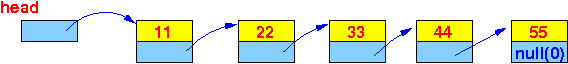

- To make the material more concrete,
I will use this List structure to
illustrate the "insert at tail of list"
algorithm
on
linked lists:
public class List { int value; List next; // This is a "reference" (= address) variable !! }A List object has the following structure:

The offset of the field value from the base address is 0
The offset of the field next from the base address is 4
Sample list:
|  |
- Problem description:
- Given a linked list
(with list element of the above structure) pointed to
by the variable head
- Given a new list element
(with the above structure)
pointed to
by the variable ptr
- Write a recursive function
List Insert(List h, List ptr)
that:
- Inserts
the new
list element at
ptr as
the last element
in the list staring at h
- Return the reference of the first element of the new list that contain the newly inserted element.
- Inserts
the new
list element at
ptr as
the last element
in the list staring at h
Example:
- If we call
Insert(head, ptr) where
head and
ptr are
as follows:
The Insert(head, ptr) call will construct the following list:
And return the pointer to the first element:
- Given a linked list
(with list element of the above structure) pointed to
by the variable head
- Now we will develop the
recursive function
List Insert(List h, List ptr)
To understand how you can come up with a recursive algorithm, you must again use the recursive nature of a linked list:
Due to the recusive nature of a linked list, we can use divide and conquer to solve the original problem using the solution of a smaller problem:
(You should recognize that inserting a list element in the original list and inserting a list element in the sub-list is the same kind of problem and can be solved with the same algorithm !!!)
When we write the recursive "insert at the tail" algorithm:
List Insert( List h, List ptr ) { // We are developing this algorith right now... }The input parameter h will represent the original list and the input parameter ptr will represent the insert list element
- In order to insert
the list element ptr in the
list starting at h,
we must find the
last element in the list
(and insert behind it).
So the Lookup( ) method will be like this:
List Insert( List h, List ptr ) { if ( list h is empty ) { return the list with element ptr; } else if ( first element is the last element ) { (1) insert ptr after the first element (2) return h } else if ( 2nd element is the last element ) { (1) insert ptr after the 2nd element (2) return h } else if ( 3rd element is the last element ) { (1) insert ptr after the 3rd element (2) return h } and so on.... }Notice that the work done in the highlighted area is the task:
- Insert the element
ptr
at the tail of this
sub-list
of the original list:
So we can replace this code using a Insert( ) call to insert in that sublist:
List Insert( List h, List ptr ) { if ( list h is empty ) { return the list with element ptr; } else if ( first element is the last element ) { (1) insert ptr after the first element (2) return h } else return Insert( h.next, ptr ); } - Insert the element
ptr
at the tail of this
sub-list
of the original list:
- Using the design above,
we can now flesh out the
recursive
Lookup( ) algorithm in
Java syntax:
(You just need to use Java expressions to replace the pseudo code in the description)
The Lookup method in Java (without the class, we can add that later) is:
static int Lookup( List h, int searchKey ) { if ( h == null ) return 0; // Not found is represented by 0 else if ( h.key == searchKey ) return (h.value); else return Lookup( h.next, searchKey ); }In CS170 or CS171, you would have learn that the cases h == null and h.key == searchKey are called the base cases.
I hope with this approach, you get a feel on how the recursion was introduced:
- We first solve the
problem without
recursion
- Then we recognize that
all the work done
by some part of the
algorithm is the
same as the
solution of
a smaller problem
- We replace that part
with a recursive call
- The remaining part that are not covered will become the bases cases.
- We first solve the
problem without
recursion
- Example Program:
(Demo above code)

- Prog file: /home/cs255001/demo/asm/9-list-recurison/Lookup.java
How to run the program:
- To compile: javac Lookup.java
- To run: java Lookup